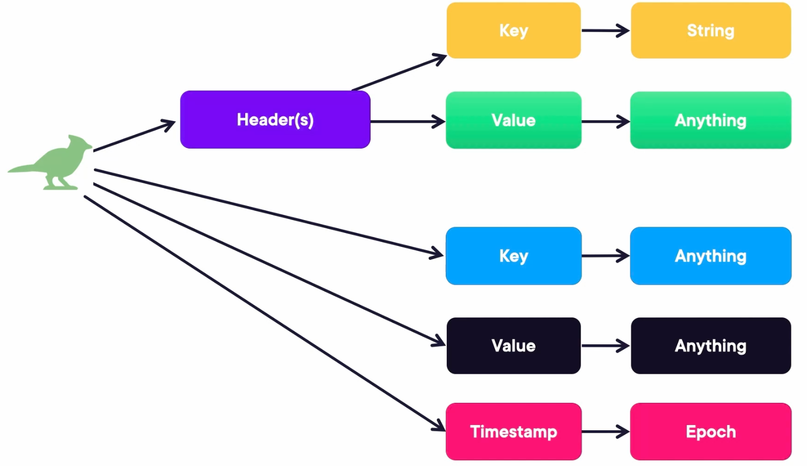

Publisher and subscriber config, decouple the UI service from the item service for future change of the item service, as long as follow the interface. UI only cares writing to one queue and then listen to another queue.
The system where the channels live and handle this requests as an Event Bus, or more recently, streaming platforms.
The channel where the messages follow is called channel or topic.
Kafka is a resilient, fast, and scalable event-driven platform.
Topics:
Recommend to have the odd number of Kafka brokers.
Kafka can run with or without Zookeeper. And what's zookeeper responsible for:
Basically in the distributed Kafka clusters, zookeeper knows where everyone is, to which each one who should connect to and help in the process of electing leaders.
Kafka connect: Just run a simple command, everything in the topic goes into or out of your system (MongoDB, Elasticsearch, Files, S3... )
Kafka streams: You can create producers/consumers at the same time as a stream of messages.

How is Kafka distributed:
In the libs directory is where you want to install plugins and make extension of Kafka. (Lots of jar)
Send message to Kafka
kafka-console-producer.sh --bootstrap-server 127.0.0.1:9092 --topic first_topic // Communication happens after.
kafka-console-consumer.sh --bootstrap-server 127.0.0.1:9092 --topic first_topic --from-beginning // Get messages of the topic from beginning
curl localhost:8082/topics // Get topics from kafka
kafka-topics.sh --create --bootstrap-server 127.0.0.1:9092 --replication-factor 1 --partitions 3 --topic myorders
// Kafka reassign partitions - when see too much load on a broker. Consumer never catches up.
less increase_replication.json // file to increase the replication.
kafka-reassign-partitions.sh --bootstrap-server 127.0.0.1:9092 --reassignment-json-file increase_replication.json --execute
Consumers can decide which message to read and from when.
The partitioner uses the key to distribute the messages to the correct partition. With the key, the message is decided to be sent to which partition (broker).
Not all topics need to be partitioned equally.
Consumer read (topic a, partition 0): from-beginning, from-end (kafka won't deliver message, but will record the consumer with id is at the end of the messages), internal offset.
Consumers read from partitions and have an offset, therefore, more partitions enable more consumers, therefore more scalability.
If one partition doesn't have any replica online, the topic is offline. Even though you can run consumer in this case, it won't receive any message, because the message is sent to the void. Since one of the partitions doesn't have a leader, which means the topic is offline.
If you bring up the broker 2, then it will self-heal.
The kafka record has key and value and could also have headers.
Set up --group1, more consumers from the same group will share the load to consume the topic.
kafka-console-producer.sh --bootstrap-server 127.0.0.1:9092 --topic myorders --property "parse
.key=true" --property "key.separator=:"
In the demo, for two consumers in the same group, one consumer got "hello from ps" with key axel, the other consumer gets nothing. This is because, the same key always goes to the same partition with which one consumer is listening to. The other consumer within the same group is listening to the other consumer.
The key is so important, and now you can see how the values are distributed with keys. The two consumers didn't see all the messages, but partial message.
// Describe all consumers and their groups
kafka-consumer-groups.sh --all-groups --all-topics --bootstrap-server 127.0.0.1:9092 --describe
Serializer and Producer Configuration
Properties properties = new Properties();
properties.put(ProducerConfig.BOOTSTRAP_SERVERS_CONFIG, "localhost:9092");
properties.put(ProducerConfig.KEY_SERIALIZER_CLASS_CONFIG, StringSerializer.class);
properties.put(ProducerConfig.VALUE_SERIALIZER_CLASS_CONFIG, IntegerSerializer.class);